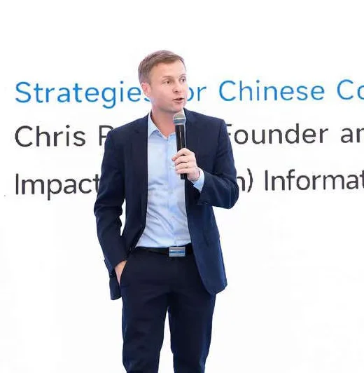
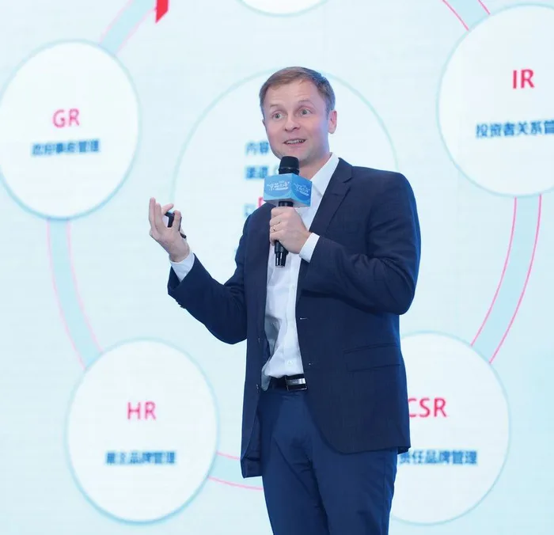
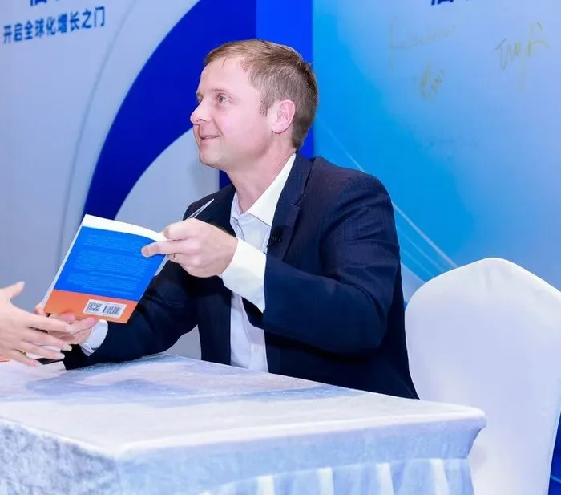
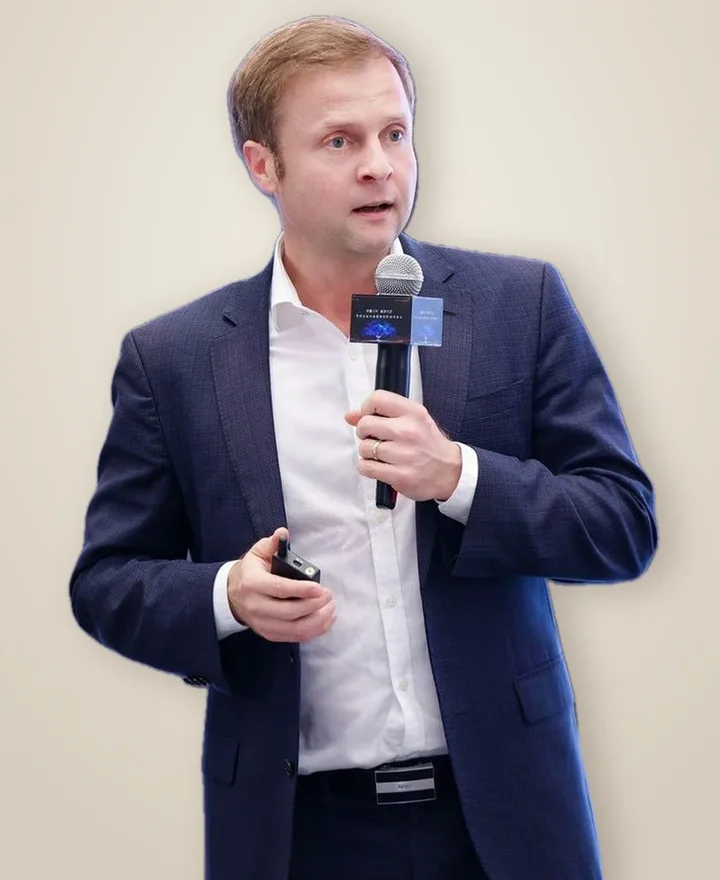

Chris Pereira彭家荣
Twenty years in China, and I'm still looking West.
Canadian business leader, author and columnist. I run iMpact 美讯, write weekly about what China shows the West about itself, and comment on China business for outlets from the FT to CGTN.

Read it. Watch it.
When "foreign" stopped meaning "better"
Nike, Starbucks and Gucci built China on imported prestige. Guochao ended that, and the brands winning now hired local teams with real power.
Stories from China, and what they reveal about the West
Each episode opens with a moment from Western history, works through the data and teaches one Chinese word of the week.
Recent writing
Western Brands in China Need to Start from Zero
When "foreign" stopped meaning "better."
What Makes a Tech Product Award-Worthy? A Judge's Inside Guide
In conversation with tech journalist Eliane Fiolet.
What to Expect at IFA 2026
The trends and technologies that will shape Berlin.
How Louis Vuitton Is Winning in Court and Losing China
LV vs. 1.4 billion Chinese.
World AI Conference 2026
Could China be the world's AI gateway?
Trust: The New Battleground for Chinese Companies Going Global
Chinese companies have conquered manufacturing. What comes next?
Media record
Speaking

Chris speaks in English and Mandarin on what two decades inside Chinese business reveal about trust, brands and competition. He has addressed more than 30 universities and many of the world's largest trade shows.
- Harvard
- Yale
- Columbia
- Penn
- London Business School
- Tsinghua University
- Peking University
- HKUST BizInsight Forum, London Stock Exchange
- IFA Berlin
- CES Innovation Awards, judge
A Canadian who came to study Chinese and stayed
I grew up in Toronto and studied English Literature at York University, then moved to Zhengzhou to study Chinese language and literature. After years in Suzhou connecting Western companies with Chinese suppliers, I joined Huawei in Shenzhen and led global public affairs work, including in Vancouver during the Meng Wanzhou case.
I founded iMpact in New York during COVID and opened our Shenzhen office when China reopened in 2023. Today I split my time between Shenzhen and Singapore, teach at Xi'an Jiaotong-Liverpool University's International Business School, and hold an MBA from HKUST.
《信任》 Trust
The Golden Key to Chinese Enterprises' Globalization. Co-published with Shenzhen Press Group.

Press kit
Chris Pereira is a Canadian business leader with 20+ years in China. He is founder and CEO of iMpact 美讯, a former Senior Director of Global Public Affairs at Huawei, and the author of 《信任》 (Trust). He writes the weekly newsletter Insights from China.
彭家荣（Chris Pereira），加拿大人，在华二十余年。美讯 iMpact 创始人兼 CEO，曾任华为全球公共事务高级总监，著有《信任》。每周撰写英文专栏 Insights from China。
Full bioChris Pereira (彭家荣) is a Canadian business leader, author and commentator with more than 20 years in China. He is Founder and CEO of iMpact 美讯, a consulting group that helps companies build trust across markets, founder of the Global Connect Show event series, and Founding Chairman of the Council for Global Brand Building (品信会).
He previously served as Senior Director of Global Public Affairs at Huawei. He holds an MBA from HKUST, teaches at Xi'an Jiaotong-Liverpool University's International Business School, was named by Forbes China one of the Top 30 pioneers in Chinese brand globalization, and has judged the CES Innovation Awards. His commentary appears in Nikkei Asia, the South China Morning Post and Fortune China, and he has been quoted by the Financial Times, the Wall Street Journal, Bloomberg, Reuters and the BBC.
彭家荣（Chris Pereira），加拿大人，在华二十余年，中国企业国际化领域的企业战略与品牌传播专家。现任美讯 iMpact 创始人兼 CEO、Global Connect Show 创始人、全球化品牌信任促进会（品信会，CGBB）创始主席。
曾任华为全球公共事务高级总监。香港科技大学 MBA，任教于西交利物浦大学国际商学院。2023 年入选福布斯中国出海全球化 TOP30 先锋人物，担任 CES 创新奖评委。著有《信任》（与深圳报业集团联合出版）。为日经亚洲、南华早报、财富中文网等撰写专栏，并接受金融时报、华尔街日报、彭博社、路透社、BBC 等媒体采访。

Download: speaking portrait · on stage at CIDPEX. Higher-resolution files for print and broadcast are available on request.


Chris Pereira 彭家荣
Founder and CEO, iMpact 美讯
Live TV and radio in English or Mandarin, on-the-record comment, op-eds, podcasts and keynotes. Based in Shenzhen and Singapore, in Hong Kong regularly.